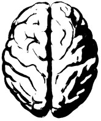
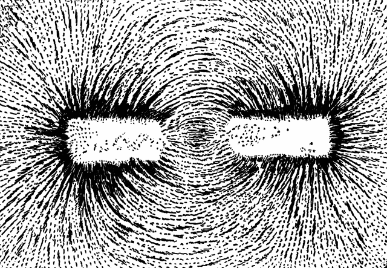
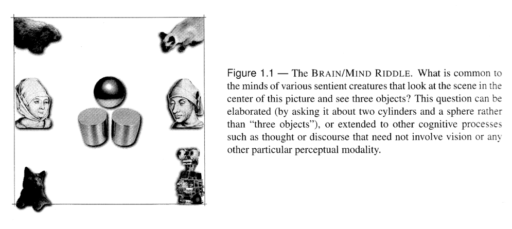

name: title class: middle, center, dark <center> <embed src="images/title.svg" type="image/svg+xml" height="100px" align="center" style="border: 0px solid lightgray;"/> </center> --- name: incBullet class: light # Agenda 1. Why study human cognition and what is it? 1. Assign readings 1. Introduction to JupyterHub --- class: light, middle, center <img src="images/circle.svg"> ###What is this course about? --- class: light, middle ##Short version .quote[ Experimental approaches to understand the structure of human thought. ] --- class: light, middle ##Longer version .quote[ An introductory course on the use of various behavioral measures (accuracy, reaction time, etc...) to understand the structure of the human mind. Our goal is to use experiments to test alternative theories of cognitive function and to better understand the motivation and structure of human behavior. We will learn a basic set of skills for interacting with computers to run experiments, collect data, analyze it, and communicate the outcome to others. ] --- class: light, middle, center  ###What is .blue[human cognition]? .quote[ The study of how the mind (or mind/brain) works. The study of how people think and solve problems. ] --- name: incBullet class: light #Examples - How do people learn effective behavior through interaction with their environment? - What are the stages of information processing the mind goes through to solve problems? - How does the architecture of the mind interact with experience to determine what we know? - How does human memory work? In what ways is human memory like computer memory? In what ways is it not? - What is the format or "representation" of information that the mind uses? - Can we develop theories that allow us to predict and explain human behavior? Can information we derive from these investigations enable us to build better artificial intelligence systems to solve problems? --- class: light #Scientific Inference A tale of two magnets <br> <center>  </center> --- class: light, middle #Scientific Inference .col1[ ] .col2[ ] --- class: light, middle #Scientific Inference .col1[ ] .col2[ - Natural Behavior - Just ask people questions - Test/quizzes (more controlled performance measures) - Reaction Time (RT) - Eye tracking - Physiological measures (EKG, Galvanic skin response, heart rate) - Brain measures (fMRI, EEG, MEG) - Lesion studies/surgical interventions ] --- class: light, middle #Scientific Inference .col1[ - Theories of information processing inspired by modern computers - Mind-as-a-computational device - Build computational theories of the way we think the mind works, test the implication of those theories in new experiments, refine theories when needed. ] .col2[ ] --- class: light ###the science of the mind <div id="scienceofmind"> </div> --- class: robot --- class: light, middle, center ###What is .blue[cognitive science]? --- class: light, middle .col1[ # Cognitive .quote[ "Cognition, as defined by Ulrich Neisser, involves all processes by which sensory input are transformed, reduced, elaborated, stored, recovered, and used." ] ] .col2[ # Science .quote[ "Science is the art of acquiring knowledge in such a manner that coherent structures of understanding can be erected on the basis of a critical evaluation of evidence." ] ] --- class: light, middle # what makes a mind? .quote[ Debated for thousands of years. If you don't have an immediate answer, don't feel bad. Various proposals have been thrown around from by Plato, Buddha, Aristotle, Zoroaster, ancient Greek, Indian, and Islamic philosophers, and even a few folks at NYU. ] --- class: light, middle # what do our minds do? .quote[ Minds encompass our thoughts, which are the mental processes which allow us to deal with the world. These include not only explicit wishes, desires or intentions but unconscious processes as well. ] --- class: light, middle # Is your mind the same as your brain? .quote[ We know that we can't have a mind or thoughts without a brain, but does that mean that minds and brain are synonymous? ] --- class: light, middle # The mind as an organization of processes .quote[ A common philosophical approach is the "slippery slope" argument to try to convince us that minds are not literally brains, but encompass anything that is organized as a set of represented mind states that accurately reflect aspect of the world. ] --- class: light, middle # The mind as an organization of processes  --- name: incBullet class: light # The mind as an organization of processes - What is common to all sober observers viewing the same scene and who are in agreement about what is viewed? - Can't literally be neurons. My neurons are my own, and you can't borrow them to solve your own problems. - Well maybe is the the literal organization of the human nervous system (up to the limit of correspondence). However, we know (or at least believe) that cats have a very similar visual system and view the world much like we do. Is it the mammalian visual system? What about other animals? - What about artificial systems formed of computers and video cameras that can accurately recognize the scene as well? - The key to minds may be not the physical substrate in which they are embodied but the relations that various states of the system have to one another and to the environment/world. --- name: incBullet class: light # The mind as an organization of processes - Minds aren't human neurons or cat neurons or robot parts, but the organization of dynamic, continually evolving systems that relate ongoing internal (i.e., mind) states and external (i.e., world) states - Correspondences can be made between the evolution of two systems to describe what they are doing independent of the exact things they operate on. - Such correspondences are particularly well described in the language of computation, simply because the **THEORY OF COMPUTATION** offers use formal insight into how ostensibly dissimilar systems can be formally identical. - Everything that can be expressed in on system can be expressed in a different, but functionally identical system. --- name: incBullet class: light # Goals for this semester - To explore (experimentally) how the brain **represents** and **processes** information in solving tasks - We have to formulate **hypotheses** about how the mind might function, then design experiments to test these hypotheses - This will involve testing various **theories** of cognitive function that can be formalized as computer programs or algorithms - We are licensed to do this due to the fundamental idea that the mind can be understood as an **organization system** that evolves according to particular rules, steps, or procedures --- class: light # For next time - Go to class [website](http://gureckislab.org/courses/fall19/labincp) - Read Chapter 1 from our online text book "What is Cognitive Science" - Expect an in-class quiz next time!